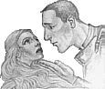

|
|
Carotte FondeurenferssonCarrot Ironfoundersson | |
C'est un nain (par adoption) d'environ deux mètres de haut. Son nom ne vient pas de la couleur de ses cheveux, mais de sa forme: il est très large d'épaules. Il a quitté ses montagnes et son amie Gnougnoutte, une naine à la barbe soyeuse, pour aller travailler au Guet municipal d'Ankh-Morpork. Il part avec sa Protection et le code, qu'il apprend par coeur. Arrivé a Ankh-Morpok, il étonne tout le monde: il s'est porté volontaire pour rentrer au Guet (d'habitude, il fallait avoir fait quelque chose de très grave pour devoir être au Guet). Il sauve une jeune femme, dans le quartier des ombres, et est hébergé par Madame Paluche, qui estime qu'il est bon d'avoir quelqu'un comme Carrotte chez soi pour défendre toute ses "très belles filles". Il aide le Capitaine Vimes (Vimaire) ainsi que Colon et Chicard a résoudre un problème de Dragons. L'image du Guet est rehaussée a la suite de cette enquête et de nombreuses recrues viennent. Parmi celles-ci, Angua, qui devient la petite amie de Carotte. Ensemble, ils résolvent de nouvelles énigmes. Une autre chose a rajouter: il est très naïf et ne ferait pas de mal a une mouche, a part si celle-ci ne respecte pas les lois. Il connaît la plupart des gens d'Ankh-Morpork par leur prénom et tous le connaissent et le respectent. Il possède un charisme à toute épreuve. Il sait réunir tout le monde dans la paix, il désire VRAIMENT aider son prochain. Il est persuadé que le sport permet de canaliser la violence, et qu'après une bonne partie de Football, deux gangs du quartier des ombres arrêteraient de s'entretuer avec des armes diverses. Et au grand étonnement de tout le monde, il a raison. Carotte patrouille les rues d'Ankh-Morpork dans : Au Guet !, Le Guet des Orfèvres, Pieds d'Argile, Va-t-en-guerre. |